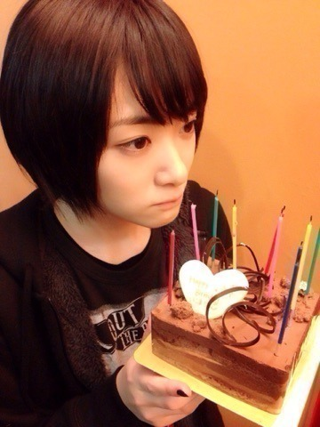
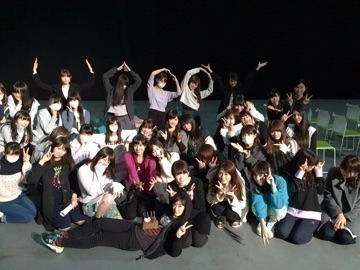

| 2014/12 29 Mon | 生まれて19年経ちました。 |
今日
平成26年12月29日
生駒里奈
19歳のお誕生日でしたヽ(・∀・)ノ
今までのお誕生日は家でお祝いしてもらっていました！
去年は京都の個別握手会でした。
今年は家のエレベーターに乗った瞬間に12月29日になりました笑
そして紅白のリハと、明日の感謝祭のリハをしていました。
今までのお誕生日は凄くゆったりとした、
冬休み中のクリスマスが過ぎて、大晦日の前の、年末番組が始まって、宿題もとりあえずしまってぬくぬくと過ごしていました。
家族が集まって、お母さんの手作りのご馳走を食べるお誕生日が大好き！！
でも、こうやってお仕事をしているお誕生日も大好き！
年末のお誕生日ってなんか嬉しいです。

今日沢山の方にお祝いしてもらいましたヽ(・∀・)ノ

ケーキ！
大好きなチョコケーキ！

まなつの膝は俺のもの。
優しいメンバー、スタッフさんに囲まれて私は幸せです。
今年は本当にいろんなことがあって、神様とか運命って物を本当に信じた一年でした。
だから神様、
お父さんとお母さんを出会わせてくれてありがとうございます。
お母さんこんな年の瀬に頑張って産んでくれてありがとうございます。
そしてお父さん！
乃木坂のオーディションを見つけてくれてありがとうございます。
この様な事がなかったら私は今の瞬間笑顔でお誕生日を迎えてないと思う。
全ての事に感謝します。
今こうしている事が幸せです！！
ラストティーン全力で頑張ります！！
こんな私を応援して下さる皆さんに少しでも恩返し出来る様に明日からも生きていきます。
来年のお誕生日も楽しみだな〜♡
へばなっ☆彡
コメント(1132)
2014/12/29 22:12